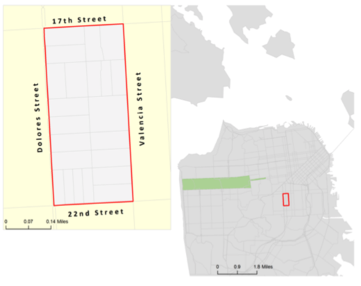
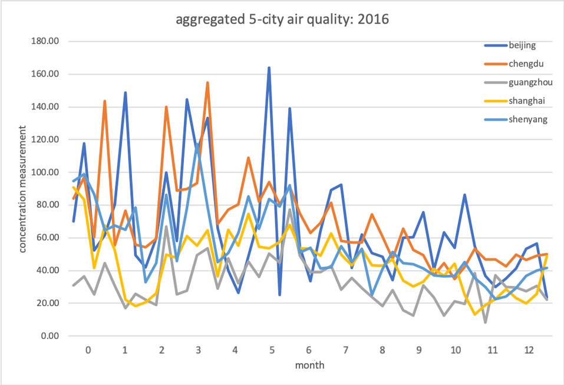

Assignment 1: Community Profile¶
|

Whitney Berry (MCP '13) and Michelle Thong (MCP '13) |
Assignment 2: Story Map¶
|
Uber/transit tradeoff in D.C.
Sophie and Lucas Bandarkar |
Transit satisfaction social media vs. surveys
Will Oakley, Andrew Legault, Ruqi Chen |
Groundwater in CA
Lovepreet Singh Chahal, Kevin Chan |
|
Impact of Location on a Business' Ratings
Nathan Gecan |

Relationship Between Air Quality and Population Attributes and Population Activity in Major cities in China
Christine Giang, Gang Xiao, Iris Ye |
Bay Area Transit Deserts
Marissa Milam and Bella-Ngoc Huynh |
|
Green Development in SF
Aubrey Hills |
||
|
Food Access and Policing in Pittsburgh
Mathew Peyton and Alexis Oddi |